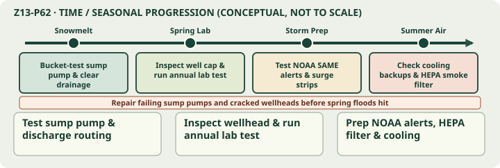

Z13-P62 · Home survival and utilities · New manuscript
Complete a spring and summer residential utility resilience check
Prepare sump pumps, cooling backups, surge protection, and private wells before spring snowmelt floods and summer derecho storms.
When it applies · Homes transitioning out of winter into snowmelt, severe-thunderstorm, and extreme-heat seasons.
Equipment · Spring checklist, certified well test kit, sump-pump test water bucket, and cooling/HEPA filter supplies.

Actions
- Test basement sump pumps (and battery/water-powered backup sump systems if installed) by pouring a bucket of clean water into the pit to verify float switch activation and clear exterior discharge routing well away from foundations and wellheads.[D05, U06]
- Inspect exterior well casings for winter plow/frost damage and submit annual certified-lab drinking-water samples each spring after snowmelt; verify gutters and downspouts drain storm runoff clear of basement walls.[U05, U06, D05]
- Service cooling units/window screens, inspect portable HEPA clean-room filters ahead of wildfire-smoke season, test NOAA Weather Radio SAME alerts for tornado season, and verify UL-listed surge protection and battery banks are charged.[D07, U16, U09]
Failure recognition · Discovering a stuck basement sump-pump float switch for the first time during a 4-inch summer flash-flood downpour.[D05]
Verify · Confirm sump pump tested cleanly, wellhead inspected and sampled, NOAA radio active, and summer clean-room/cooling supplies ready.[U05, U16, D07]
Stop or change course · Failing sump pumps, cracked well casings, or damaged overhead tree limbs overhanging power service drops require prompt qualified repair before storm peak.[U06, D04]
Evidence and editorial notes
- D04 · FEMA / Ready.gov · Thunderstorms and Lightning (current web edition)
- Section: Severe Thunderstorms, Straight-Line Winds, Hail, and Lightning · Conditions: Severe Thunderstorm Warnings, derechos, and electrical storms
Support: Move indoors to a substantial building immediately when thunder is heard or severe wind warnings issue; stay away from windows, corded appliances, and plumbing during lightning, and avoid downed limbs and energized downed lines after derechos.
Limitations: Straight-line derecho winds can rival tornado damage across hundreds of miles and cause multi-day regional power blackouts. · Conflicting evidence: None; integrates with E07 and E18.
Editorial note: Grounds severe-storm, hail, and straight-line wind response cards. · Specialist reviewer: Meteorology and utility safety
Primary source · checked 2026-11-24
Current assessment · A04-D04 (2026-11-25) · Bounded support confirmed from an alternate source (A04): The two relevant pages support separate thunder/lightning and high-wind conditions and energized line avoidance. The original tornado link did not verify this claim. Limits: Specialist review PENDING (Meteorology and utility safety); publication HOLD. All release decisions pending. - D05 · FEMA / Ready.gov · Floods (current web edition)
- Section: Floods: During; Turn Around, Don’t Drown · Conditions: Flooded roads or trails, flood alert, or post-flood re-entry
Support: Move to safe higher ground when directed, never walk or drive into floodwater, and respect closures and re-entry restrictions.
Limitations: Depth examples are warning illustrations, never safe entry thresholds. Trapped or submerged vehicles require emergency help and scene-specific response. · Conflicting evidence: See A02 claim audit for boundaries.
Editorial note: Core flood evacuation, water-avoidance, and safe re-entry evidence. · Specialist reviewer: Emergency management and flood hydrology
Primary source · checked 2026-11-24 - D07 · US EPA · Create a Clean Room to Protect Indoor Air Quality During a Wildfire (current web edition)
- Section: Create a Clean Room > Indoor Filtration and Recirculation Setup · Conditions: Households sheltering indoors during multi-day wildfire smoke events
Support: Designate an interior room with few doors/windows, run a properly sized portable HEPA air cleaner (avoiding ozone generators) or set HVAC to recirculate with a MERV-13 filter if system-compatible, and avoid indoor combustion (candles, gas stoves, vacuuming without HEPA) that adds particulates.
Limitations: During simultaneous extreme heat and smoke, cooling takes priority if indoor temperatures become dangerous—relocate to a public clean-air cooling center. · Conflicting evidence: None; addresses compound smoke-plus-heat emergencies.
Editorial note: Core indoor clean-room assembly and compound-hazard card evidence. · Specialist reviewer: Indoor air quality and public health
Primary source · checked 2026-11-24
Current assessment · A04-D07 (2026-11-25) · Bounded support confirmed from an alternate source (A04): EPA supports clean-room particle control, a correctly sized low-ozone cleaner and compatible HVAC filtration. Limit to wildfire smoke and safe temperature; flood page was unrelated. Combustion, candle use and vacuuming are distinct particle sources. Limits: Specialist review PENDING (Indoor air quality and public health); publication HOLD. All release decisions pending. - U05 · US EPA · Private Drinking Water Wells (current web edition)
- Section: Private Drinking Water Wells > Maintenance, Floods, and Testing · Conditions: Households relying on private domestic groundwater wells
Support: Private wells are not regulated by municipal utilities; test water annually (and after any flood, power loss with pressure drop, or plumbing repair) through a certified laboratory and keep wellheads sealed above grade away from runoff and chemicals.
Limitations: Visual clarity or normal taste never proves a private well is free of bacteria, nitrates, or arsenic. · Conflicting evidence: None; aligns with CDC-WELL (W18) and MDH-WELL-HOME.
Editorial note: Core private-well governance and testing cadence in Z13. · Specialist reviewer: Hydrogeology, licensed well contractor, and public health
Primary source · checked 2026-11-24 - U06 · Minnesota Dept. of Health · Wells and Borings Safety (current web edition)
- Section: Wells and Borings > Minnesota Private Well Standards and Disinfection · Conditions: Minnesota and Upper Midwest private residential wells
Support: Use a licensed Minnesota well contractor for wellhead repair, electrical pump work, or shock disinfection after flooding or backflow; maintain sanitary well caps and isolate well casings from surface snowmelt and agricultural runoff.
Limitations: DIY well-cap removal or improper chlorine mixing risks aquifer contamination and electrical shock. · Conflicting evidence: None; regionalizes EPA-WELL for Minnesota conditions.
Editorial note: Anchors Upper Midwest private-well resilience and licensed-trade handoff. · Specialist reviewer: Minnesota environmental health and licensed well trades
Primary source · checked 2026-11-24 - U09 · U.S. Fire Administration · Battery Fire Safety (Current web edition)
- Section: Messages to share; lithium-ion battery safety · Conditions: Consumer battery charging, storage, use and visible failure
Support: Follow manufacturer limits and use certified compatible equipment. Stop use for heat, swelling, noise, leaks or unusual smell. Evacuate and call for help during an active incident.
Limitations: Battery electrical protection, flooding, thermal faults and lead-acid installation require applicable specialist review. Do not handle failing cells. · Conflicting evidence: See A02 claim audit for boundaries.
Editorial note: Grounds portable power sizing, inverter limits, and battery fire safety. · Specialist reviewer: Electrical safety and fire prevention
Primary source · checked 2026-11-25 - U16 · FEMA / Ready.gov · Emergency Alerts (current web edition)
- Section: Household Emergency Communications During Grid and Cell Outages · Conditions: Residential power, internet, and cellular tower disruptions
Support: Maintain a battery/crank NOAA Weather Radio, spare power banks, car-charger backups, written contact cards, and local AM/FM broadcast station lists so warnings and utility restoration updates remain accessible without Wi-Fi or cell data.
Limitations: Cordless landline handsets and VoIP routers fail immediately when house power drops unless separately backed up. · Conflicting evidence: None; links Z13 household comms to Z15 disaster alerts.
Editorial note: Grounds home communications continuity during extended blackouts. · Specialist reviewer: Emergency communications specialist
Primary source · checked 2026-11-24
Source lineage · FEMA Ready.gov Floods, Heat, and EPA Private Wells; new manuscript · Classification · New manuscript.